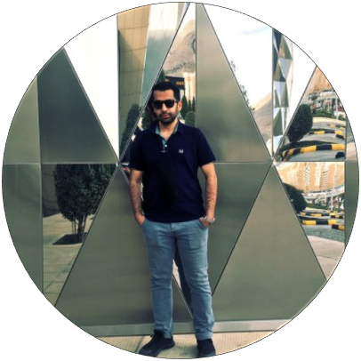

Bike-share traffic flow forecasting
Hourly origin–destination prediction to support demand forecasting and resource rebalancing.
Explore project ↗Hi, I’m Ali Behroozi. I build practical AI and analytical systems that turn complex data into useful insights, predictions, and better decisions.

A selection of projects spanning predictive modeling, AI agents, research automation, and decision support.
Hourly origin–destination prediction to support demand forecasting and resource rebalancing.
Explore project ↗A client–server research agent with tool discovery, persistent SQLite state, and multi-step LLM execution.
Explore project ↗Iterative web and arXiv retrieval, reflection, and sourced reporting for research workflows.
Explore project ↗Structured outputs, validation, confidence-aware routing, and human review for email workflows.
Explore project ↗Multi-source data harmonization, LLM-assisted annotation, analysis, and monitoring.
Explore project ↗Customer segmentation and Tableau visualization to support targeted business decisions.
Explore project ↗Working across AI engineering, operational analytics, simulation, and mobility research.
Developing LLM applications, RAG workflows, model routing, and production-oriented AI flows with structured validation and tool use.
Analyzing railway and port operations; building Python/SQL workflows, simulation scenarios, KPIs, and Power BI dashboards for decision support.
Analyzed aircraft trajectories and built reproducible spatial and statistical workflows to identify patterns and anomalies.
Researching graph-based demand forecasting and reinforcement learning for shared mobility and infrastructure planning.
Building and evaluating machine learning, forecasting, and graph-based mobility modeling workflows.
From exploring a dataset to building and evaluating models and communicating results.
Python, SQL, Pandas, NumPy, statistical analysis, experimentation, feature engineering
Forecasting, scikit-learn, XGBoost, model evaluation, SHAP, error analysis
PyTorch, TensorFlow, GNNs, LSTM, Transformers, reinforcement learning
RAG, model routing, MCP, structured outputs, tool calling, agent workflows
Power BI, DAX, Tableau, KPI design, segmentation, data storytelling
Git, Docker, SimPy, GeoPandas, spatial analysis, scenario modeling
My research explores how graph learning and predictive models can improve our understanding of shared mobility.
A. Behroozi & R. Shabanpour · npj Sustainable Mobility and Transport
A. Behroozi & A. Edrisi · Public Transport
Two research works presented at the Transportation Research Board Annual Meeting.
K. N. Toosi University of Technology · 2020–2023 · GPA 18.33/20
Hormozgan University · 2016–2020
I’m interested in conversations about applied AI, data science, forecasting, and research.